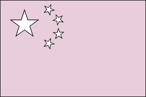
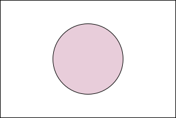
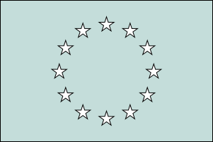

Women art historians have often remained
unseen among the numerous layers of intellectual contributions
constructing the field of art history.
The image of the matryoshka conjures up the
unwrapping of layers, uncovering what is underneath, what is
inside.
Peeling away the layers in the attempt of
revealing the role of women in art history is the aim of this
data-driven project.
At the beginning, every matryoshka doll
looks similar to the other.
A solid and unique piece of wood, softly
shaped and a little bit shiny.
If you have ever played with one of these dolls, you know that things
are not as they may appear from afar.
If you look closer, you can see that what once appeared to be
one now breaks into
two perfectly joint halves.
Let’s take a moment to observe things from an
external perspective.
And take a look at this superficial division.
What can we see?
Let's start with some numbers.
The total number of known art historians in the world is
.
of them are
men.
of them are
women.
This means that only
of art historians
are women.
01
02
03
04
05
06
07
08
09
10
11
12
13
14
15
16
17
18
19
20
21
22
23
24
25
26
27
28
29
30
31
32
33
34
35
36
37
38
39
40
41
42
43
44
45
46
47
48
49
50
51
52
53
54
55
56
57
58
59
60
61
62
63
64
65
66
67
68
69
70
71
72
73
74
75
76
77
78
79
80
81
82
83
84
85
86
87
88
89
90
91
92
93
94
95
96
97
98
99
100
We observed the doll and noticed how
different parts make up the complete
external decoration and in what percentage.
Are we sure we are not missing
smaller details?
We looked for people whose gender is described as
male or female.
What about art historians who do not feel represented by gender binarism?
Let's take a look at our numbers again.
The total number of known art historians in the world is
.
of them are
men.
of them are
women.
of them are
non-binary.
This means that non-binary people represent
only the 0.01% of the total number of
known art historians in the world.
It is now time to narrow and, at the same time, go deeper inside our
search.
Matryoshka is known to be a symbol of Russian culture.
Many do not know that nesting dolls have been used as symbols for
hundreds of years in many
different countries. From China to Japan,
they finally spread throughout eastern
Europe.



Wanting to go a little more into detail, we decided to focus our study
on the European status of gender distribution among art historians,
analyzing it from a
geographical perspective.
Percentage of female art historians
50%
100%
Percentage of male art historians
As expected, most of the countries report a majority of
male art historians.
But there are also a few exceptions!
Estonia scores
51.4% of female art historians.
Slovenia scores a surprising
57.7% against the general trend.
If we exclude the outliers, we may say that
the observed scenario was pretty predictable.
However, data collected about European
distribution can be very useful, following
our research principle which goes from the most general to the more
specific.
Let’s see more in detail how we can use them by looking at one of the
most important issues of gender inequality:
occupation.
Art history is one of the most
interdisciplinary fields in the humanities
and it is related to several other sectors. Accordingly, art
historians are multifaceted figures, usually having more than one job.
For this reason, we looked for the
most common occupations among art historians
for each gender.
The results are pretty clear.
Most art historians, both women and
men, occupy positions that are mostly
related to cultural institutions.
Being recognized as a
member of one of these institutions can
therefore be considered as a sign of academic recognition and public
prestige.
Let’s see what are the rates for male and female art historians inside
european academies and organizations.
In this case, we will merge data obtained
from the geographical analysis
with data demonstrating
visibility of women
inside academic institutions.
What do you expect from this comparison?
Do you think that the proportions will remain the same?
Select a country and see!
As you can see, proportions are not respected at all.
More precisely, women's visibility inside
academic institutions doesn't generally reach half of their visibility
for each country.
Let's go deeper!
Taking these results into consideration, let’s see if a different
result can be observed by analyzing visibility from a
different perspective.
It's time to turn the tables!
Let’s substitute the
geographical coordinates with
temporal limits
and translate the academic visibility into
authorial recognition.
Let’s start by looking at the timeline.
We will see how many art historians are going through the most
productive period of their career along intervals of twenty years.
As time goes by, the percentage of females grows almost linearly.
Proportionally, the gender gap is gradually shrinking.
Let’s now add the actual number of
scholarly publications produced during those
years to the equation.
Despite the aforementioned evolution in female activity, the
production of scholarly works and therefore their
visibility remains almost
unchanged.
Data show that the gender inequality gap in
the art history field is real.
Starting from this general trend, let’s consider a more specific
example from the real world in
which the results so far observed can be tested and questioned.
ARTchives is a platform aiming to collect information related to art
historians' personal archives.
The objective of the project is therefore to populate a queryable
knowledge graph of art historians’
archival fonds for research purposes.
At the moment, ARTchives contains data about:
collections.
art
historians.
keeping institutions.
ARTchives contains no data about gender.
For our research purposes, we integrated information about gender from
Wikidata and came out with the following
result:
01
02
03
04
05
06
07
08
09
10
11
12
13
14
15
16
17
18
19
20
21
22
23
24
25
26
Only one out of the 26 art historians
is actually a woman.
Is it really possible?
What happens if we take a deeper look at what's
inside ARTchives?
Some things may look familiar to us but sometimes we are missing
their hidden meaning.
Do you know what the origin of the word
matryoshka is?
matryoshka
ma·try·osh·ka (mä′trē-ō′shkə)
n.
A nesting doll that is part of a set and is decorated with the
features of a woman in traditional Russian dress.
[Russian matrëška, from Matrëna, feminine personal name
(associated in popular tradition with the mothers of large
peasant families), from earlier Matrona, ultimately from Latin mātrōna, matron;
see matron.]
Matryoshkas are not only symbols of femininity, as we all know.
Matryoshkas are also the embodiment of a
name.
The name of a woman.
Peeling away the layers in the attempt of revealing the names of women
inside ARTchives is indeed the aim of our final research.
We traced back to hidden names of women connected to the collections
inside ARTchives in order to raise their
visibility.
These are their portraits.
Luisa Vertova
1921 · Alive
Gender: female.
Country: Italy.
Occupation: Art
historian, Auctioneer, Editor.
Member of: Cini
Foundation.
Published:
Cupid and Psyche in Renaissance Painting before Raphael.
Member of:
Bibliotheca Hertziana - Max Planck Institute of Art History.
5
Evelyn Sandberg Vavalà
1888 · 1961
Gender: female.
Country: United
Kingdom.
Occupation: Art
Historian
Member of: Cini
Foundation.
Published: - A Chapter in Fourteenth Century Iconography: Verona - The Reconstruction of a Polyptych by Michele Giambono.
6
Svetlana Alpers
1936 · Alive
Gender: female.
Country: United
States of America.
Occupation: Art
historian, University teacher.
Member of: American
Academy of Arts and Sciences, Institute for Advanced Study,
National Endowment for the Humanities.
Published: - Interpretation without Representation, or, the Viewing of
Las Meninas, - Describe or Narrate? A Problem in Realistic
Representation.
7
Steffi Roettgen
1941 · Alive
Gender: female.
Country: Germany.
Occupation: Art
historian, University teacher.
Member of:
Kunsthistorisches Institut in Florenz, Ludwig Maximilian
University of Munich.
8
Elisabeth McGrath
1945 · Alive
Gender: female.
Country: United
Kingdom.
Occupation: Art
historian, Curator.
Member of: British
Academy, Royal Flemish Academy of Belgium for Science and the
Arts, Warburg Institute.
Published: - Rubens: Subjects from History. - The Slave in European Art: from Renaissance Trophy to
Abolitionist Emblem.
9
Anna Ottani Cavina
1939 · Alive
Gender: female.
Country: Italy.
Occupation: Art
historian, University teacher, Organizational Founder, Writer.
Member of: Fondazione
Federico Zeri, Fondazione Musei Civici di Venezia, Istituto
Veneto di Scienze, Lettere ed Arti.
Published: -Louis Gauffier and the question of J.- L. -David's Vue présumée du Jardin du Luxembourg. - On the Theme of Landscape - II: Elsheimer and Galileo.
10
We have come to the end of our
journey.
Gender inequality is still real
and finding ways for filling this gap is now more important than
ever.
For this reason, we decided to share and make available all the
data used in this project.
Additionally, we decided to create a small
knowledge graph that could
enrich Linked Open datasets and other interesting projects such as
ARTchives with the significant profiles of women found hidden inside
it.